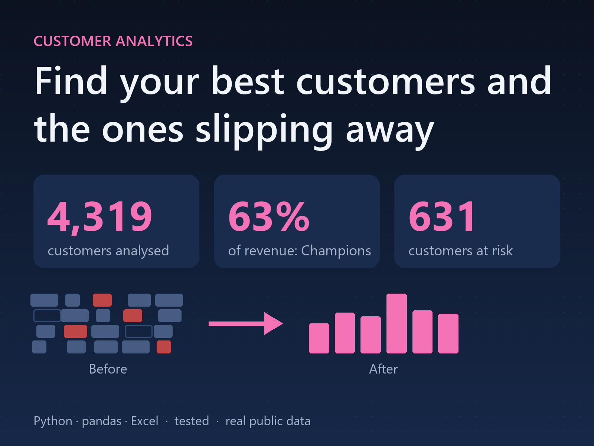
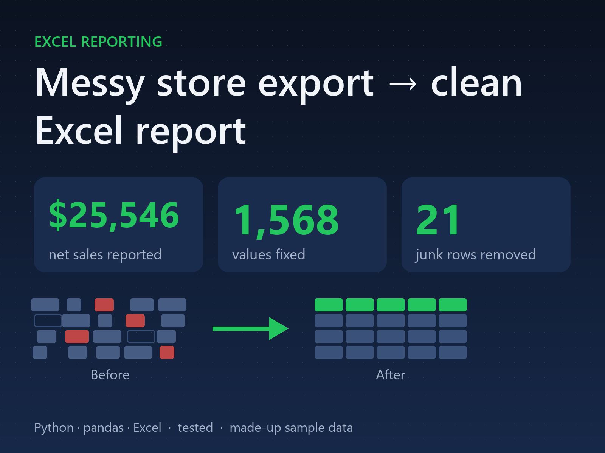
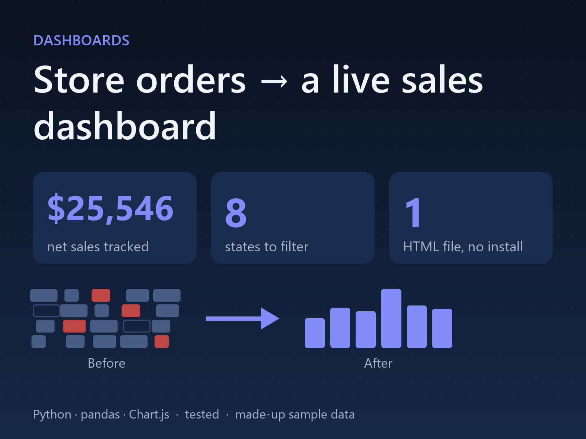
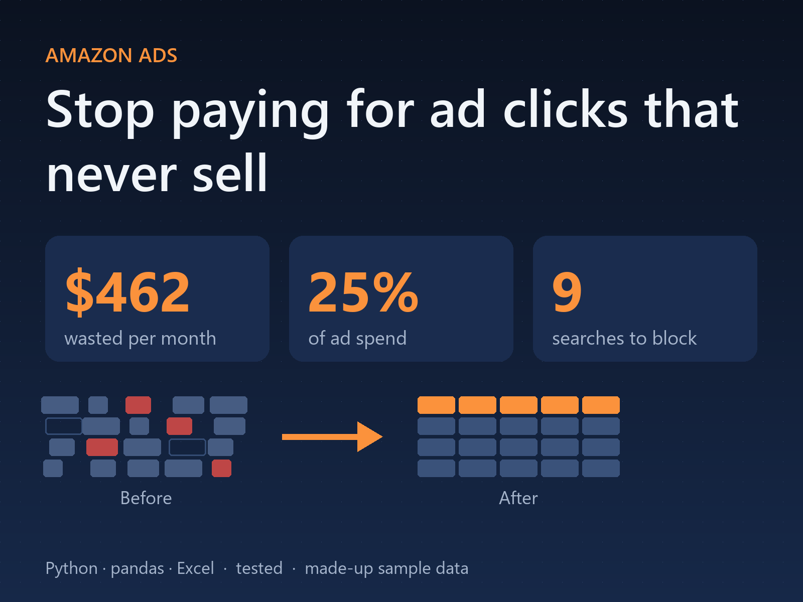
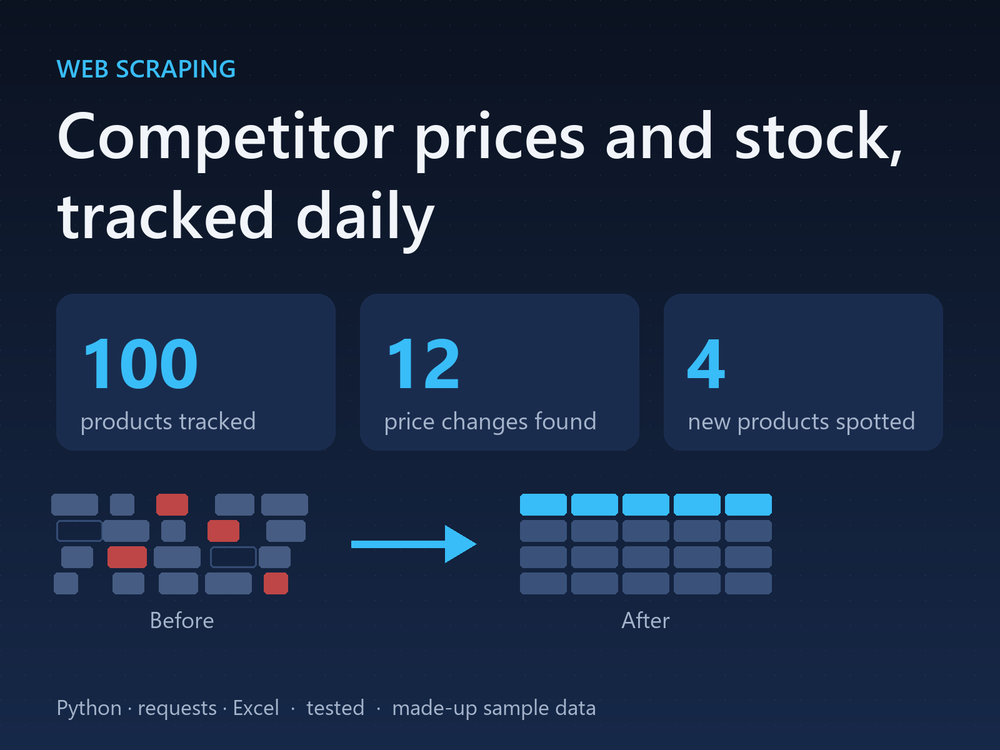
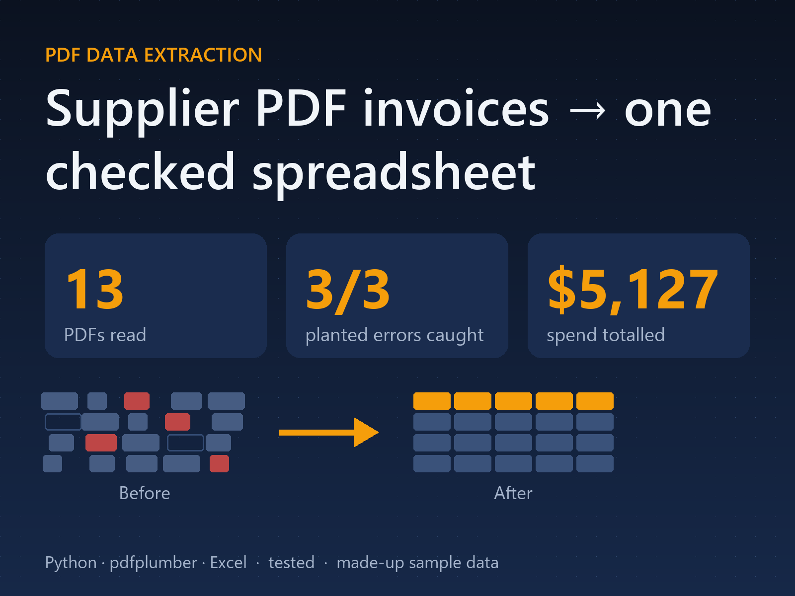
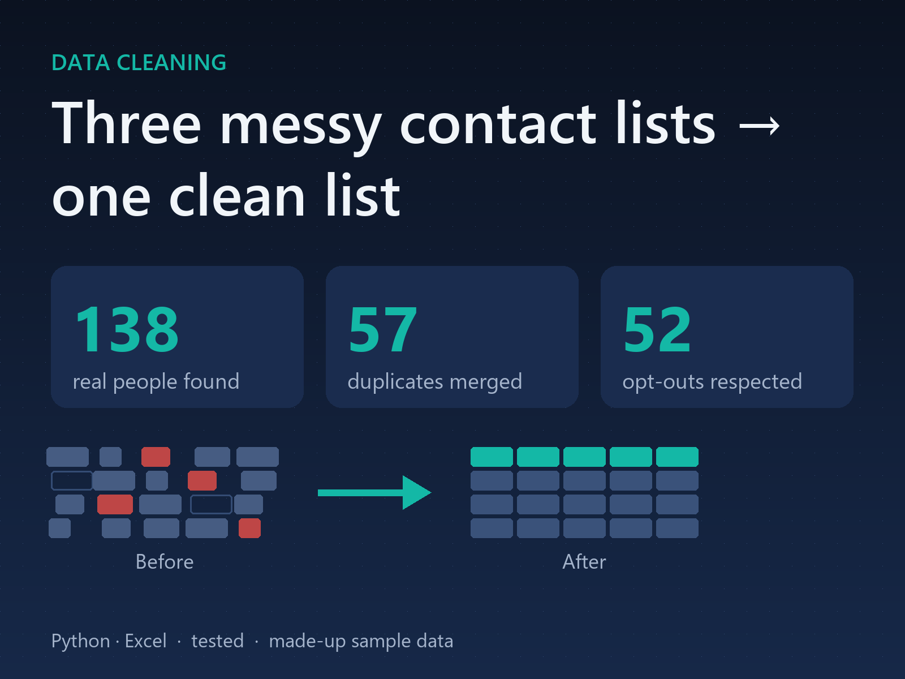

Customer insights (real data)
Scores 4,319 real customers from 541,909 order lines on recency, frequency and spend, and puts each in a segment with a suggested action.
Small, tested Python tools for online sellers and small businesses: Excel and Google Sheets reports, dashboards, web scraping, PDF extraction and data cleaning. Each demo comes with its finished output, so you can see the result without running anything.

Scores 4,319 real customers from 541,909 order lines on recency, frequency and spend, and puts each in a segment with a suggested action.

Cleans a messy store order export and builds a formatted Excel sales report, with a log of every fix.

Turns the cleaned orders into an interactive one-file web dashboard: KPI cards, charts, a state filter and the latest orders.

Finds the searches wasting ad money, the bids to lower and the winners to promote, from an Amazon search term report.

Scrapes a product catalogue on a schedule and reports price, stock and range changes in Excel.

Reads supplier invoice PDFs in different layouts, checks the maths and GST, flags duplicates and writes one workbook.

Merges messy customer lists, fixes names, emails and phone numbers, removes duplicates and keeps marketing consent strict.